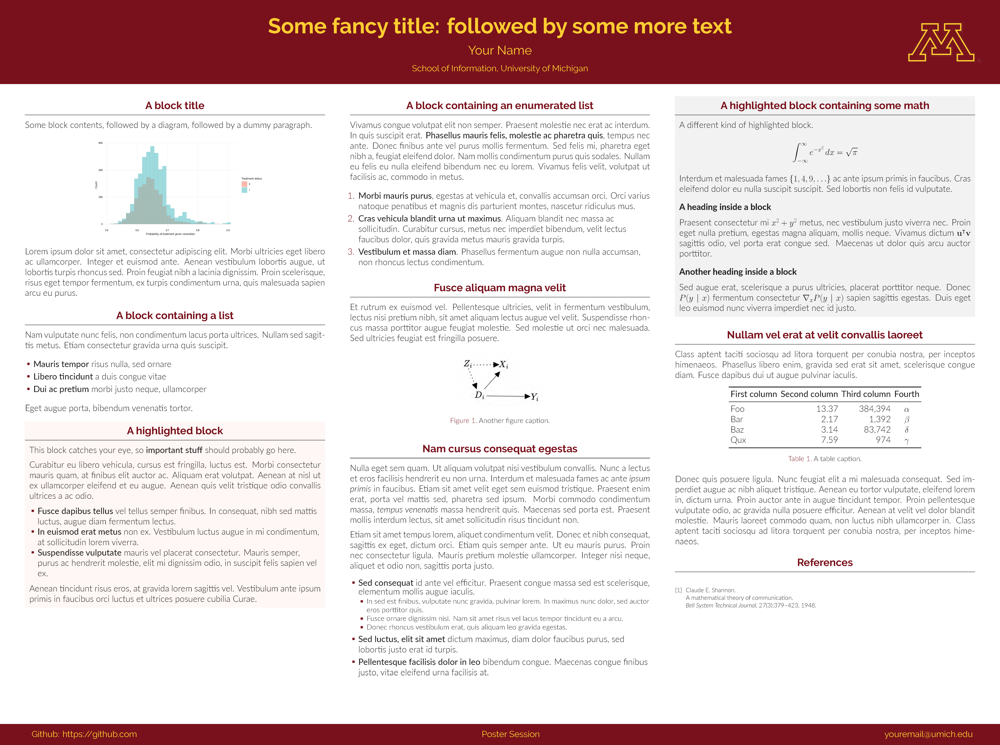

University of Minnesota (unofficial) Beamer poster template

This template is originally forked from Anish Athalye’s gemini beamer poster template. To use it, click on the button at the top of this page and make a copy of the Overleaf project.
Colors and logo
I created a UMN beamer color theme to replace the genemi color theme, and named the color theme file in the root directory “beamercolorthemeumn.sty”. Among the UMN official colors, I used the UMN Maroon for title background and the UMN Gold for the main title. To activate this color theme, “\usecolortheme{umn}” is specified in the preamble of the “poster.tex” file.
I also added the UMN logo to the right top. To use your own logo, you can save the logo file in the “/logos” folder and specify “\logoright{\includegraphics[height=5cm]{logos/your-logo.png}}” in the preamble of the “poster.tex” file.
Size
The line “\usepackage[size=custom, width=122,height=91, scale=1.2]{beamerposter} " in the main tex file defines the aspect ratio of the poster. I find the current aspect ratio fits well on a 36"x48” poster printing. You can scale up and down to change the overall font size.
- Posted on:
- August 8, 2023
- Length:
- 1 minute read, 175 words
- See Also: